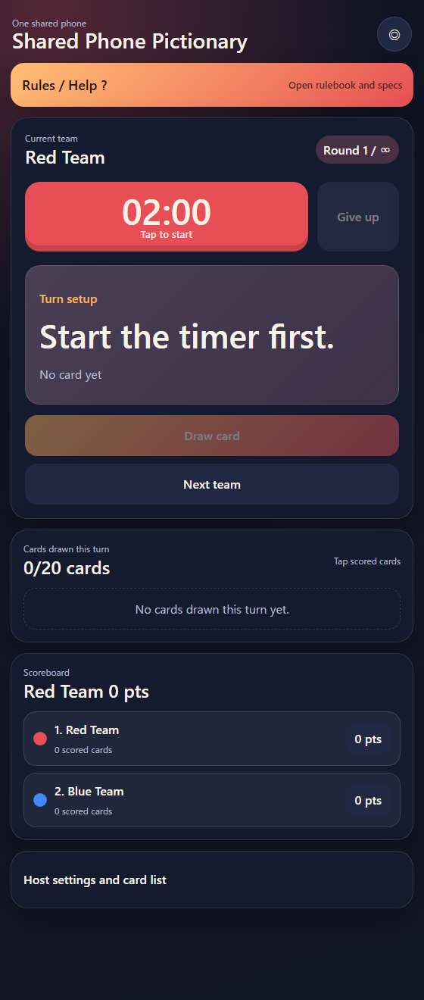
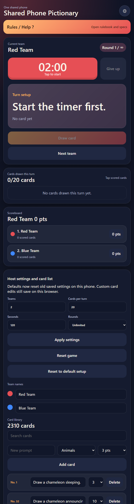

Help / Rules / Specifications
Shared Phone Pictionary
30秒版
Quick Start
- スマホでもPCでも、1台の共有画面で遊びます。
- タイマーを押してターン開始。開始後にカードを引けます。
- 時間内に引いたカードの中から、描いて正解したものだけ得点にします。
- 残り時間が0になったらカードは隠れます。得点を集計してから、手動で Next team を押します。
- 困ったら画面下の Host settings and card list を開いて、設定やカードを調整します。
English quick start
- Play on one shared phone, tablet, or PC screen.
- Tap the timer to start a turn. Cards can be drawn after the timer starts.
- During the turn, score only the drawn cards that were successfully guessed.
- When time reaches 0, the card is hidden. Score the turn, then tap Next team manually.
- Open Host settings and card list at the bottom if you need to change settings or edit cards.
日本語
ルールブック
- スマホでもPCでも遊べます。1台の共有画面を使い、チームごとに操作を交代します。
- 初期設定は、2チーム、1ターン20枚、制限時間120秒、ラウンド無限です。
- ターン開始時にタイマーを押します。カードはタイマー開始後に引けます。
- 制限時間中、そのターンの上限枚数までカードを引けます。引いたカードの中から任意の数を描いてかまいません。
- 得点できるのは、そのターン中に引いたカードだけです。
- 正解したカードの得点ボタンを押すと得点になります。もう一度押すと取り消せます。
- 残り時間が0になると、現在のカードは隠れます。下のリストで正解カードを集計してから、手動で Next team を押します。
- タイマーを一時停止すると、現在のカードは隠れます。再開すると同じカードが再び表示されます。
- Give up はタイマーを終了し、得点集計の状態にします。自動では次のチームに移りません。
- ホストが設定したラウンド数まで遊びます。Unlimited の場合は、やめるまで続けられます。
English rulebook
- Play on a phone or a PC. Use one shared screen and let teams take turns controlling it.
- The default setup is 2 teams, 20 cards per turn, 120 seconds, and unlimited rounds.
- At the start of a turn, tap the timer. Cards can be drawn only after the timer starts.
- During the turn, draw up to the card limit. The team may attempt any number of the cards drawn that turn.
- Only cards drawn during the current turn may be scored.
- Tap a card's point button when that card was successfully drawn and guessed. Tap it again to remove the score.
- When time reaches 0, the current card is hidden. Score the successful cards below, then tap Next team manually.
- If the timer is paused, the current card is hidden. Resume the timer to show the same card again.
- Give up ends the timer and moves the turn to the scoring step. It does not automatically change teams.
- The game continues until the host's round limit is reached. If rounds are Unlimited, play continues until the group stops.
Screen Map / 画面案内
Where the buttons are

1 2 3 4 5 6 7 8 9 10- Rules / Helpこのルールブックを別タブで開きます。
English
Open this rulebook in a separate tab.
- Team color現在チームの色テーマを切り替えます。
English
Switch the visual theme for the current team.
- Timerターン開始・一時停止。停止中はカードが隠れます。
English
Start or pause the turn. Pausing hides the current card.
- Give upタイマーを止め、チーム移動せず得点集計に入ります。
English
End the timer and move to scoring without changing teams.
- Prompt cardいま描ける、現在表示中のカードです。
English
The only card currently visible for drawing.
- Draw cardタイマー開始後、次のカードを引きます。
English
Draw another card after the timer starts.
- Next team得点集計後、手動で次チームへ移ります。
English
Move manually to the next team after scoring.
- Cards drawnここで得点ボタンを押して加点・取消します。
English
Tap point buttons here to add or remove scores.
- Scoreboard得点を押すとカード別履歴を見られます。
English
Tap a score to see card-by-card history.
- Host panel設定、チーム名、リセット、カード編集を開きます。
English
Open settings, team names, reset controls, and card editing.
日本語
仕様書
- 利用形態
- スマホ・PCのどちらでも使えます。1つのブラウザ画面を共有し、カスタムデータはそのブラウザ内にだけ保存されます。
- 初期設定
- 2チーム、1ターン20枚、120秒、ラウンド無限です。
- 山札
- 英語のお題が約2300枚あります。分類は Animals、People、Objects、Places、Countries、States です。
- 得点
- 各カードには1から10点の固有得点があります。高得点カードほど少なく、基本的に難しくなります。
- 画像
- 難しい動物、難しい物や場所、国のお題のヒントとして、参照画像が表示されることがあります。
- 保存
- カードの追加・編集・削除、チーム名、得点、設定はブラウザのローカル保存に記録されます。
- リセット
- ホスト用のリセット操作で、進行状況を消したり、設定を初期状態に戻したりできます。
- このヘルプページ
- ゲームとは別ページで開かれ、ゲーム進行や保存データには影響しません。
English specifications
- Device model
- Works on phones and PCs. Use one shared browser screen. Custom data is saved only in that browser.
- Default settings
- 2 teams, 20 cards per turn, 120 seconds, unlimited rounds.
- Deck
- About 2,300 English prompts across Animals, People, Objects, Places, Countries, and States.
- Scoring
- Each card has a 1-10 point score. Higher scores are rarer and generally harder.
- Images
- Reference images may appear for difficult animals, difficult objects or places, and country clues.
- Persistence
- Card additions, edits, deletions, team names, scores, and settings are stored in local browser storage.
- Reset
- Host reset controls can clear progress and return settings to the default setup.
- This help page
- This page opens separately and does not read or change the game state.
Host Panel / ホスト用画面
How to open and use host settings

1 2 3 4 5 6- Open host panel画面下の “Host settings and card list” を押します。通常は閉じています。
English
Tap “Host settings and card list” at the bottom of the game screen. It is closed by default.
- Game settingsチーム数、1ターンの枚数、秒数、ラウンド数を変更します。Unlimited は無限です。
English
Change team count, cards per turn, seconds, and round limit. Rounds set to Unlimited means endless play.
- Host actions設定反映、進行リセット、初期設定への復帰を行います。
English
Apply settings, reset current progress, or return the browser to the default setup.
- Team namesチーム名を編集します。チーム色はそのまま識別に使います。
English
Edit team names. The team color remains the team identity.
- Card libraryカード検索、新規追加、カテゴリ、得点設定を行います。
English
Search cards, add new cards, choose category, and choose point value.
- Edit and delete cards既存カードの文言・得点を編集できます。Delete はこのブラウザの保存デッキから削除します。
English
Existing card text and score can be edited. Delete removes the card from this browser’s saved deck.
日本語: ホスト設定やカード編集は、このブラウザ内だけに保存されます。他のスマホやPCには同期されません。プレイ中、ホスト用画面は閉じたままでかまいません。
English
Host changes are saved in this browser only. They do not sync to other phones or PCs. The host panel does not need to stay open during play.
Rules closed
Return to the game tab
This rulebook did not change the game. You can close this tab or switch back to the original game tab.
ルールブックはゲームに影響していません。このタブを閉じるか、元のゲームタブに戻ってください。